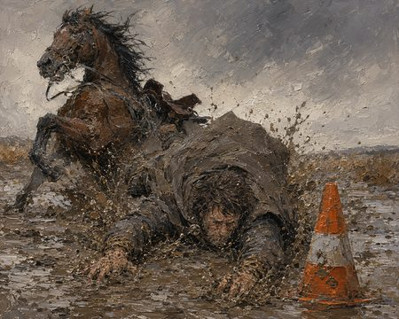
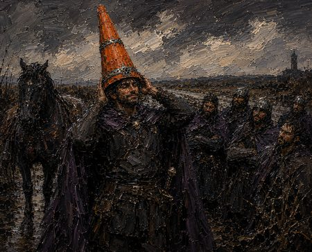

Case File
Stands alone. No other case needs to be read first. Choose another by its promise.
- Pages — 103
- Genre — Epic Fantasy · Satire · Political Intrigue
When King Aethelgard the Resplendent dies without an heir, Illumaria's whole theology of visible grace turns the search for his successor into a lit competition: three rival claimants — Archduke Ignis, Duchess Astraea, and Duke Cassian — arrive at the Grand Basilica of Sol-Invictus each wearing a device built to make them glow. Duke Blakk of Mud-Reach, the poorest and least ambitious name on the guest-roll, comes only to vote for whoever won't raise the timber tax — and three nights before his household guard crosses a nameless drainage ditch, an Anchorite of the Drowned Road, working for the Cultivator Envoy Corps' Observer 902, plants three identical objects in the mud as standard redundancy. Blakk's horse finds the first.
He sets the resulting hollow orange cone on his own head as a joke, forgets to take it off, and is still wearing it in the Basilica's last row when High Pontiff Sarel's ceremonial beam of concentrated light finds it — and its retroreflective bands throw the beam straight back down the line it arrived on, cracking a three-century-old lens and blinding half the congregation with what looks, to three thousand kneeling monks, like the most convincing grace the Decree of Luminescence has ever produced. Blakk spends the next forty-one years trying to give the throne back. Nobody believes him: not the three houses whose war at the Standing at Illmere Ford turns his identical, unread letters of surrender into a legendary act of strategic mercy, and not Canon Voss, the one man who does the geometry correctly and spends four decades, and one exile, trying and failing to prove it.
What follows is less a triumph than an audit: a marriage settled by one underlined line in a private ledger, a Law of Succession that costs Blakk the very thing forty years of reluctant grace had bought him, and a Rite of Reconsecration, delayed until his deathbed, that finally puts the Vessel to the one test it was never built to survive. The Vessel of Unmediated Grace closes on a Cultivator's own archival log — Case Study 4,555: one 0.2-pound cone, a kingdom that never gets to read its own founding accident correctly, and an Observer already three ditches away before the file is closed.
Principal Subjects

Blakk
Falls off his horse into a ditch, puts a traffic cone on his head as a joke, and spends four decades trying to give the crown back.

Astraea
Musters an army over a letter she doesn't quite believe, and spends the rest of her life auditing what that cost her.

Cassian
Holds his chin unnaturally high to keep his own crown from breaking his neck, then does the same careful arithmetic on an entire war.

Ignis
Wears seventy pounds of burning iron to prove his grace is forged rather than given, and loses the throne to a cone anyway.

Aethelgard
Dies without an heir, and leaves an entire kingdom's theology with nothing left to measure but a stopped heart.

Observer 902
Files four centuries of flat, evaluative-language-free reports on one cone, and breaks protocol exactly once to say why it mattered.
Additional Case Records
6 additional subjects documented


Records
-

The Anchorite of the Drowned Road plants the Vessel in a ditch no map had ever named.
-

Blakk's palfrey loses its footing, and pitches its rider toward the Vessel.
-

Blakk sets the cone on his own head as a joke for his guard.
-
The Sol-Focus Arc's beam finds Blakk, beneath his column, at the Great Judgment.